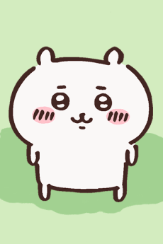
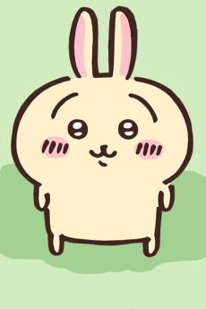
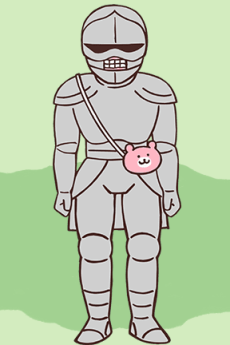

Chiikawa's friend. They're cheerful and positive. They live in a
cave.

They're a bit of a cry baby, but they're kind. They make a living
weeding and hunting.

Chiikawa's friend. They often loudly scream things like "ura" and
"yaha".

They love cute things. They sell handmade pochettes and pajamas.
Chiikawa are a beloved trio of cute little animals. Personally, my favorite is the little white chiikawa. I think he's really me fr. He's kind of shy and is very cute and trying his best in social situations. Hachiware is very sweet and caring towards chiikawa too and is a great friend. Usagi is kind of a weirdo but he makes very cute crazy noises so I like him too.